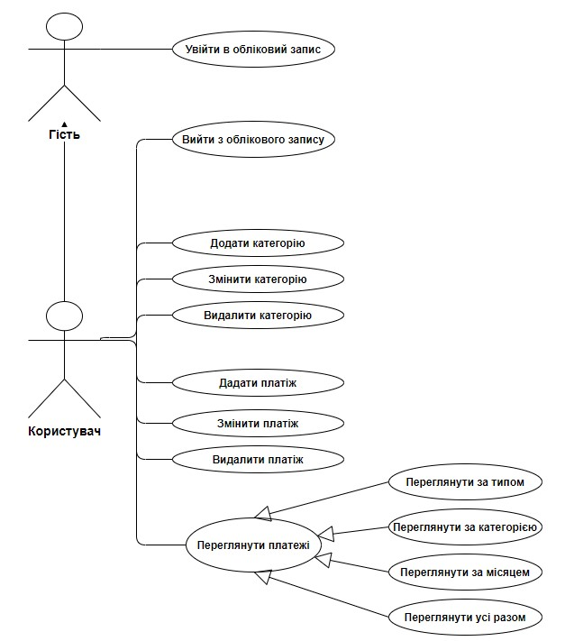

Опис предметної області
Предметна область: Веб-сайт ведення домашньої бухгалтерії
Метою роботи є створення системи, що дозволяє вести домашню бухгалтерію. Для цього система повинна мати певні властивості та виконувати такі задачі:
- система повинна мати можливість створювати, редагувати, видаляти категорії та інформацію про витрати чи надходження;
- система повинна мати можливість перегляду витрат чи надходжень за категоріями та за вказаний період;
- мати зручний, інформативний та ,зрозумілий користувачу інтерфейс.
Функціональні вимоги до системи
Система має відповідати наступним функціональним вимогам:
- для користування системою користувач обов’язково повинен зареєструватися;
- зареєстрований користувач повинен мати можливість створювати категорії за типом (витрати чи доходи), змінювати та видаляти вже існуючі категорії ;
- зареєстрований користувач повинен мати можливість створювати платежі, змінювати платежі та видаляти їх;
- зареєстрований користувач повинен мати можливість переглядати платежі за типом, категорією та за певний період;
- зареєстрований користувач повинен мати можливість бачити загальну суму своїх витрат та доходів.
Нефункціональні вимоги до системи
Система має відповідати наступним нефункціональним вимогам:
- система повинна забезпечувати цілісність та безпеку даних користувача;
- система повинна мати веб-інтерфейс;
- інтерфейс користувача має бути зручним та інтуїтивно-зрозумілим;
- система повинна бути крос-платформенною.
Діаграма прецедентів
